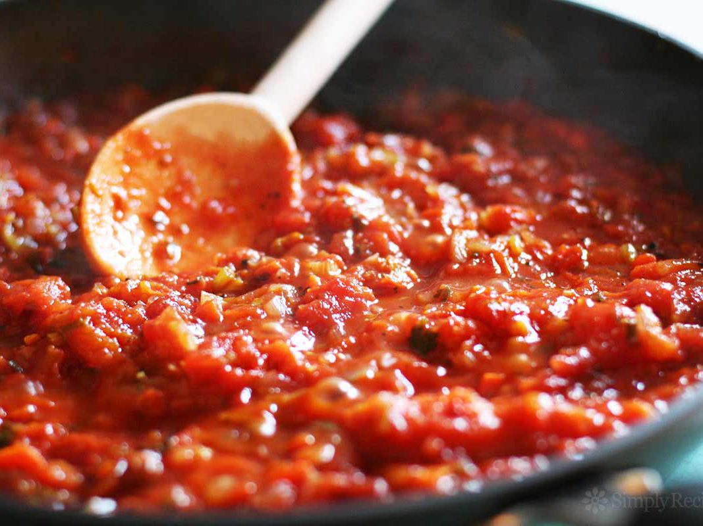

Tomato Sauce

Yummy tomato sauce! Yummy!
- Garlic
- Onion
- Sugar
- Lemon
- Canned Tomatoes
- Oregano
- Olive Oil
- Salt & Pepper
- Chop up and cook garlic and onion in olive oil.
- Add canned tomates, taste with sugar and lemon and oregano.
- Let it cook for around 20 - 30 minutes. Taste with salt and pepper.